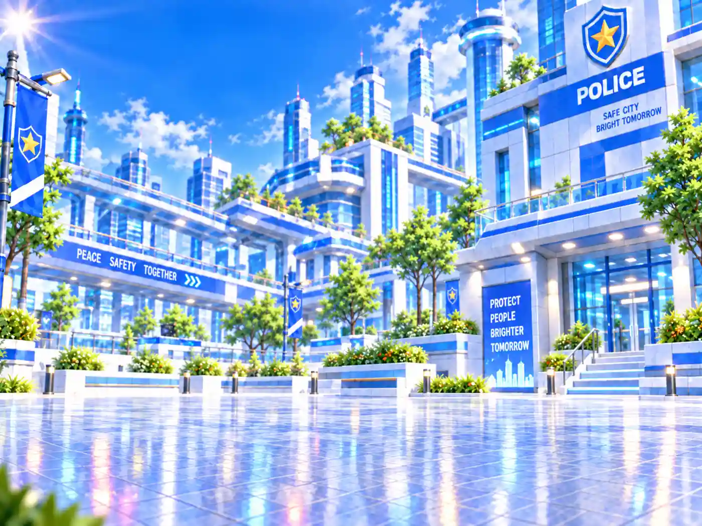

vehicle_transition_five_clear｜Q × Alpha 比較
全10表示ともパトカー問題画面の背景、1400×1050の同一サイズ・同一位置。baselineは元PNG、残り9枚は元PNGから直接生成したlossy WebPです。スクロールして輪郭・発光・濃紺の透過を比較してください。
baseline
元PNG · 1,328,244 bytes

q80_a100
Q80 / Alpha100 · 168,390 bytes
q80_a70
Q80 / Alpha70 · 100,756 bytes
q80_a40
Q80 / Alpha40 · 84,328 bytes
q60_a100
Q60 / Alpha100 · 153,308 bytes
q60_a70
Q60 / Alpha70 · 85,674 bytes

q60_a40
Q60 / Alpha40 · 69,246 bytes
q40_a100
Q40 / Alpha100 · 146,000 bytes
q40_a70
Q40 / Alpha70 · 78,366 bytes
q40_a40
Q40 / Alpha40 · 61,938 bytes